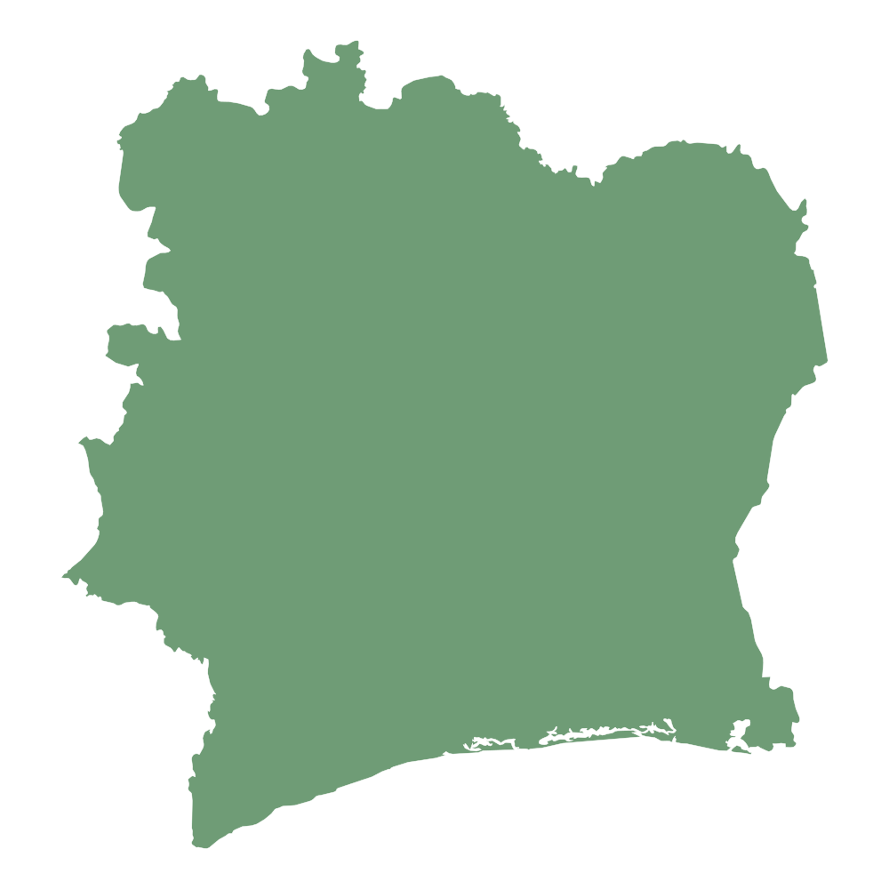
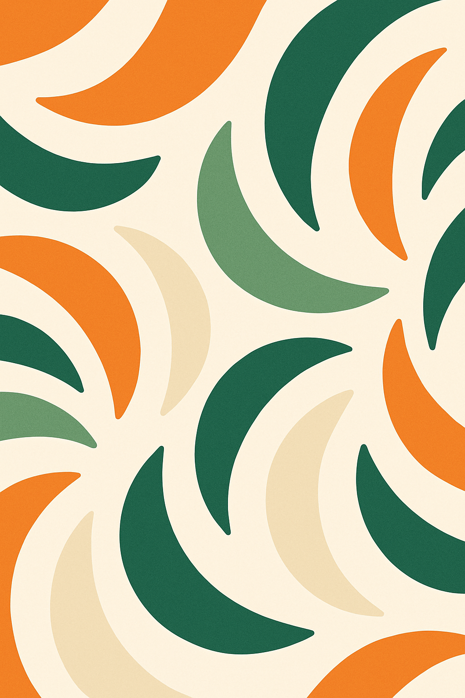
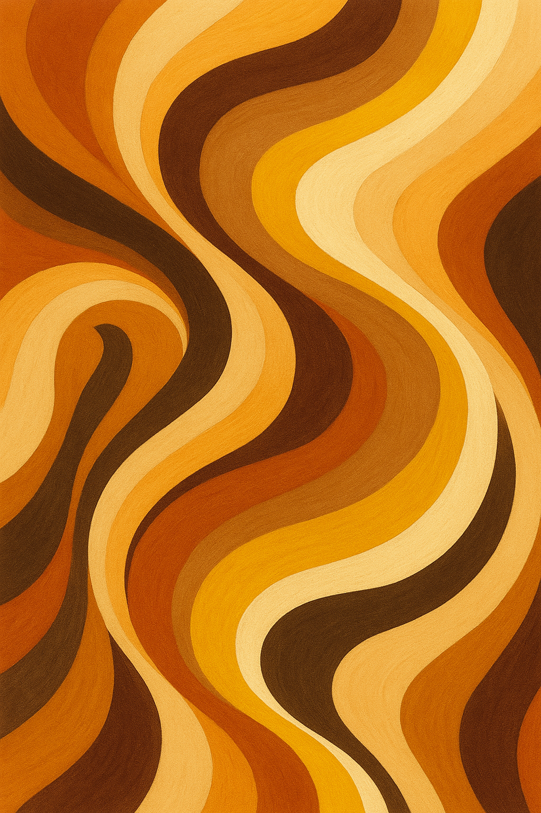

Bienvenue sur Bellivoire
Découvrez l’histoire et la mission de notre nouveau blog dédié à la valorisation du savoir‑faire ivoirien et au partage des opportunités locales.
Lire la suite
BellivoireVotre source d’information et d’inspiration en Côte d’Ivoire
Découvrez l’histoire et la mission de notre nouveau blog dédié à la valorisation du savoir‑faire ivoirien et au partage des opportunités locales.
Lire la suite
Plongez dans la richesse culinaire et les traditions qui font la singularité de la Côte d’Ivoire. De l’attiéké au zouglou, nos racines sont à l’honneur.
Lire la suite
Analyse des dernières tendances économiques, des opportunités d’investissement et des projets majeurs qui façonnent notre pays.
Lire la suite
La fête des masques est un événement culturel majeur dans la région de Man, célébrant les traditions et les croyances des peuples Dan et Yacouba.

L’attiéké accompagné de poisson braisé est l’un des plats les plus populaires en Côte d’Ivoire, originaire du peuple Ébrié.

L’attiéké accompagné de poisson braisé est l’un des plats les plus populaires en Côte d’Ivoire, originaire du peuple Ébrié.

Le Placali accompagné de sauce klala est l’un des plats les plus populaires en Côte d’Ivoire, originaire du peuple Akan.

Fruits de mer accompagné de l’attiéké est l’un des plats les plus populaires en Côte d’Ivoire, originaire du peuple Krou.

Le Haricot et l'Igname sont des cultures très populaires en Côte d’Ivoire, originaires du peuple Mandé du Nord.

Le Haricot et l'Igname sont des cultures très populaires en Côte d’Ivoire, originaires du peuple Sénoufo.
Bellivoire est une plateforme dédiée à la promotion de la culture, de l’entrepreneuriat et de l’actualité ivoirienne. Nous croyons en la puissance des histoires locales et en la capacité de nos jeunes entrepreneurs à façonner l’avenir. Notre blog propose des articles soignés pour vous informer, vous divertir et vous inspirer à participer activement au développement de la Côte d’Ivoire.